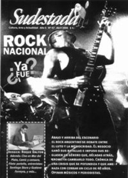

Buscar
Roque Dalton: el poeta indócil
Irónico y brillante, crítico y antidogmático, poeta y militante; Roque Dalton no es sólo una de las figuras emblemáticas para comprender la historia reciente de América Latina. Es una voz que resuena hasta nuestros días y que se resiste a ocupar su lugar en el pasado. Retazos de una historia que sólo puede escribirse en tiempo presente. Desde El Salvador, escriben Juan José Dalton (su hijo) y los escritores Jaime Barba y James Iffland.
Edición N° 47
Abril 2006
Revista bimensual
Comprar edición impresaSumario
- Rock nacional ¿Ya fue?
- Páginas falsas
- Roque Dalton: el poeta indócil
- 21° Festival Internacional de Cine de Mar del Plata - Lo bueno, lo malo y lo feo
- Santiago Stura: "No creo en los géneros narrativos"
- Censurado: la Dictadura y la historieta argentina
Compartir Articulo
"Los muertos están cada vez más indóciles// Antes era fácil con ellos:/ les dábamos un cuello duro una flor/ loábamos sus nombres en una larga lista:/ que los recintos de la patria/ que las sombras notables/ que el mármol monstruoso.// El cadáver firmaba en pos de la memoria/ iba de nuevo a filas/ y marchaba al compás de nuestra vieja música.// Pero qué va/ los muertos/ son otros desde entonces.// Hoy se ponen irónicos/ preguntan.// ¡Me parece que caen en la cuenta/ de ser cada vez más mayoría!".
(El descanso del Guerrero, de "Taberna y otros lugares", 1969)
Empacado el tipo, se resiste a ocupar su lugar en la fila. El fantasma rebelde se empecina en abandonar las zonas marcadas para los espectros de ayer y juega a importunar a los editores de los diarios con sus ácidas acotaciones, se divierte al irrumpir con humoradas en los aburridos discursos académicos, susurra sus versos más filosos a las voces de la calle, invade una y otra vez, como un estigma, las pesadillas de sus asesinos. El tipo no se queda quieto, se niega a toda voz a perderse en el olvido y pelea a empujones contra las leyes de la muerte. El fantasma rebelde juega con los lápices ajenos y borra, al primer descuido del cronista de turno, los verbos que se refieren a él en pasado. Casi siempre lo ven aparecer por las tardes disfrazado de mito, surge irreverente como herida abierta, sangrante aún, y su imagen es un desgarro lacerante para todo un pequeño país al que alguna vez bautizaron bíblicamente con el nombre El Salvador.
En la superficie gris de los vivos, su recuerdo es inevitable: como símbolo y como mártir, como poeta-mito y también como intelectual-desmitificado, como disfrutante de la vida y como rebelde incansable, como marxista y como cristiano, como jodón y como antidogmático. Roque Dalton no se calla nada y sigue hablando hoy, y de sus brazos tiran las cuerdas de los vivos. La derecha, que jamás le perdonó sus convicciones y muchos menos su sacrificio militante, impone sus leyes como triunfadora en la batalla y elude sin rubores la incomodidad de su ejemplo revolucionario. Lamenta la derecha semejante "desvío" en el camino puro de un hombre de letras y resalta, oportunista, una y mil veces, las sombras de su asesinato. La izquierda lo elige como bandera de lucha, su voz es la furia de un mar embravecido que llama (¿no era llamaba?) a cambiarlo todo desde la raíz con el fuego entre los labios, lo descubre hoy como poeta y lo defiende como combatiente. El resto observa el desdoblamiento del poeta como una ceremonia atroz de descuartizamiento: cada quién se lleva un pedazo de Roque para su trinchera. Pero el poeta es indócil y resiste. Se niega a la ceremonia que intenta dividirlo y estratificarlo, como si fuera posible leer sus versos cálidos ignorando los senderos que eligió en su derrotero personal. Cada noche, como el Ave Fénix, los retazos de Roque Dalton vuelven a surgir de las entrañas de la tierra y a fundirse en uno solo: el hombre que fue y que, hasta ahora, sigue siendo puro presente en El Salvador.
"Hablar de Roque es hablar de quienes fuimos, de quienes somos hoy, de dónde y cómo plantamos el pie en las encrucijadas actuales. (...) Abran el juego, pues: dime cómo defines a Dalton y te diré quién eres y hacia dónde caminas", escribió el intelectual salvadoreño Álvaro Rivera. Es así: hablar de Roque hoy es leer la historia trágica de un pueblo, es conocer detalles de una poética tan personal como hija de su continente y de su tiempo, y es también acercarse a una batalla inacabada contra el enemigo imperialista y contra los dogmáticos que nunca faltan en las filas rebeldes. Y hoy, la imagen de Dalton es el espejo más difícil de eludir, ese espejo en el que se reflejan hoy sus contemporáneos, sus acérrimos enemigos de clase, sus queridos compañeros de lucha, sus impunes asesinos, los mismos que hoy defienden los intereses de aquellos que decían combatir.
"No confundir,/ somos poetas que escribimos/ desde la clandestinidad en que vivimos./ No somos, pues, cómodos e impunes anonimistas:/ de cara estamos contra el enemigo/ y cabalgamos muy cerca de él, en la misma pista./ Y al sistema y a los hombres/ que atacamos desde nuestra poesía/ con nuestras vidas les damos la oportunidad de que se cobren,/ día a día."
(Sobre nuestra moral poética, de "Poemas clandestinos", 1974)
El joven cronista se acercó silencioso al monumental pintor. La exhuberancia física de Diego Rivera imponía un respeto que solía mezclarse con una cierta dosis de temor para los advenedizos que osaban interrumpirlo en mitad de su trabajo. El corazón del joven cronista de 18 años latía a martillazos ante el gigante mexicano. No iba a ser fácil, estaba seguro. No lo fue. De hecho, fue la entrevista más breve en la incursión de Roque Dalton por el oficio de periodista. Fue, también, el diálogo más violento de su vida, el que cambió su mirada sobre las cosas y el que marcó su propia tarea como poeta en construcción. Y duró tan sólo unos segundos. Rivera fue el primero en hablar, con su vozarrón aguardentoso...
"-¿Cuántos años tienes?
-Dieciocho.
-¿Has leído algún libro de Marx?
-No.
-Entonces tienes dieciocho años de ser un imbécil".
Fin de la entrevista. Aquel feroz intercambio de palabras con el muralista en 1953, durante una corta estadía de Dalton en Chile que tenía como objeto estudiar leyes en la universidad, dejó una huella en el alma del poeta. A partir de ese día, ya nada fue lo mismo. Su viaje de regreso a San Salvador significó el descubrimiento de su propio país como elemento esencial de su poesía. Hasta ese viaje iniciático a Chile, Dalton ofrecía en su poesía una mirada lúdica y "nerudiana" en sus versos, mirada que sufrió un violento cambio de perfil a partir de aquellos días de juventud. "Al igual que un gran número de poetas latinoamericanos de mi edad, partí del mundo nerudiano, o sea de un tipo de poesía que se dedicaba a cantar, a hacer la loa, a construir el himno, con respecto a las cosas, el hombre, las sociedades. Era la poesía-canto. Si en alguna medida logré salvarme de esa actitud, fue debido a la insistencia en lo nacional. El problema nacional en El Salvador es tan complejo que me obligó a plantearme los términos de su expresión poética con cierto grado de complejidad", explicó más tarde.
Frente al dilema de una realidad que le era hasta entonces lejana, cuando no indiferente, desde su educación cristiana las preguntas comenzaron a asaltar el corazón del poeta. Eran momentos de transformación a nivel personal y poético, y esa mutación significaba elegir un camino para dejar atrás el anterior. Ese cambio profundo a nivel personal incluía una apuesta personal hacia el compromiso y la militancia, pero también sería el comienzo de una visión crítica hacia toda aquella poesía que elegía mantenerse ajena a los acontecimientos de la época: "¿Cómo pudisteis cantar infamemente a las abstractas rosas y a la luna bruñida, cuando se caminaba paralelamente al litoral del hambre y se sentía el alma sepultada bajo un volcán de látigos y cárceles, de patrones borrachos y gangrenas y oscuros desperdicios de vida sin estrellas?... Ay poetas que os olvidasteis del hombre, que os olvidasteis de lo que duelen los calcetines rotos, que os olvidasteis del final de los meses de los inquilinos, que os olvidasteis del proletario que se quedó en una esquina con un bostezo eterno inacabado, lleno de balas y sin sangre, lleno de hormigas y definitivamente sin pan... ay poetas ¡cómo duelen vuestras estaturas inútiles", escribió entonces.
El dilema del "compromiso" del artista se transformó a partir de allí en una cuestión de principios que lo acompañaría durante toda su corta vida. "Para qué debe servir la poesía revolucionaria? ¿para hacer poetas o para hacer la revolución?", se preguntaba, mitad ironía y mitad verdad. Pero Dalton no estaba dispuesto a dejarse llevar por aquella moda que repetían ciertos rebeldes de bolsillo del sistema ante cada auditorio, voces ambiguas repletas de eufemismos y de atajos oportunos para eludir incómodas definiciones. Para Roque, la poesía era su herramienta y el combate debía, inexorablemente, contemplar la confrontación directa contra las fuerzas de los explotadores: "Considero que todo lo que escribo está comprometido con una manera de ver la literatura y la vida a partir de nuestra más importante labor como hombres: la lucha por la liberación de nuestros pueblos. Sin embargo, no debemos dejar que este concepto se convierta en algo abstracto. Yo creo que está ligado con una vía concreta de la revolución, y que esa vía es la lucha armada". Así, sin ambigüedades ni medias tintas, Dalton planteaba la caracterización de su labor y la perspectiva de la lucha política que tenía a América Latina como escenario definitorio.
"Una crítica a la Unión Soviética/ sólo la puede hacer un antisoviético.// Una crítica a China/ sólo la puede hacer un antichino.// Una crítica al Partido Comunista Salvadoreño/ sólo la puede hacer un agente de la CIA.// Una autocrítica equivale a un suicidio".
El asesinato de Roque Dalton es uno de los episodios más oscuros de la historia de la izquierda latinoamericana. Ningún otro hecho fusionó en un solo crimen una perversa trama protagonizada por dogmáticos, estúpidos, desviados, burócratas, verticalistas y asesinos. Nunca en la historia reciente del continente se evidenció tan claramente los peligros del sectarismo para una organización de izquierda. Osado sería intentar despejar las sombras que todavía cubren los sucesos de aquellos días de mayo de 1975 desde este puñado de líneas que intentan recordar retazos de la vida y la obra de un poeta...
La nota completa en la edición gráfica de Sudestada Nº47
--------------
En el corazón de la memoria
por Juan José Dalton, desde San Salvador (*)
Han pasado las elecciones municipales y de diputados; ha pasado un momento turbulento de nuestro proceso democratizador (o como se le quiera llamar, porque de democracia no veo mucho). Después de tanta guerra recién pasada, ¡increíble!: la derecha ansiosa del golpe de estado y la izquierda de la insurrección. A El Salvador le sigue quedando mal el nombre. No hace mucho alguien decía que deberíamos estar orgullosos de ser la única nación en el mundo que lleva el nombre de Dios... Mi padre decía que nuestro país tenía nombre de hospital o de remolcador.
Como periodista de medios internacionales estuve trabajando para tratar de reportar las vergonzosas campañas electorales, en las que abundó la ofensa, la calumnia, las descalificaciones y el despilfarro de dinero en las más antiestéticas publicidades. Me encontraba, el jueves 16 de marzo, en un salón del Hotel Radisson, donde se estaban revisando los votos impugnados de la elección de San Salvador, cuando una persona sonriente, con toda la fisonomía del salvadoreño común, se me acercó y me dijo con acento gringo: "¿Es cierto que sos el hijo de Roque Dalton?".
"Sí", le contesté y nos apartamos del público. "Yo soy salvadoreño pero vivo desde hace más de 20 años en Estados Unidos. He venido como observador de las elecciones... ¡Qué increíble, este país no cambia! Como decía tu papá, va a necesitar lavativas de pólvora". Se refería al poema "El Salvador será", que es el último de "Las Historias Prohibidas de Pulgarcito", y que en sus primeros versos anuncia la utopía: El Salvador será, un lindo/ y sin exagerar, serio país.
En ese libro, que es un collage de poemas diversos, se narra un poco de la verdadera historia de los salvadoreños. Ahí está también el famoso "Poema de Amor", el cual fue musicalizado a finales de la década de 1970 y fue usado para recaudar solidaridad para la guerra (1980-1992). "Hoy es himno de los salvadoreños en Estados Unidos", me decía aquel observador que reside actualmente en Los Angeles, California.
Más de 30 años tiene Roque Dalton de haber sido asesinado por un grupo de fanáticos que decían ser "los más puros revolucionarios", entre ellos el ex comandante guerrillero Joaquín Villalobos, criminal de guerra impune (no sólo por lo de mi padre, sino porque está señalado en el Informe de la Verdad como tal). Hoy Villalobos se dedica paradójicamente a asesorar a gobiernos en "temas de resolución de conflictos".
A casi 30 años de su asesinato, la tumba de Roque Dalton no existe ni existirá. Su gran monumento es su propia obra que la mayoría de salvadoreños llevamos cada vez más en el centro de nuestra memoria, en el centro de nuestros corazones.
Como decía mi tío Lico Morales: ¡Algún día va a cambiar este país de mierda! Ojalá sea cierto. Mientras, y aunque la intelectualidad contemplativa local considere que la obra de Roque Dalton es símbolo de la paranoia izquierdista, no hay poeta vivo o muerto que mejor nos retrate.
...Este país es una espina de acero.
Supongo que no existe sino en mi borrachera,
pues en Inglaterra nadie sabe de él.
Oh torbellino de víboras,
mediodía del tamaño del siglo!
Llegar vivo a la solemne noche
con un halo indeleble,
ser apuñalado en el corazón
por doce peones borrachos,
bajar al territorio de las fueras
para prepararse una taza de café,
todo es aquí absolutamente natural!
Si sólo conservara uno la fe!
(*) Es periodista. Hijo de Roque Dalton, actualmente se ocupó de la cobertura de las recientes elecciones parlamentarias en El Salvador para diversos medios internacionales. Este texto es especial para Sudestada.
Del compromiso político como (est)ética
Por Rafael Lara-Martínez [[Es profesor de la Facultad de Humanidades, en la Universidad Tecnológica de Nuevo México.]]
Desde finales de enero de 1956, con el manifiesto "Explicamos", el Círculo Literario Universitario establece una agenda de trabajo. Los principios son: unir arte-vida; conmemorar a quienes permanecieron "fieles a su vocación" y "mantuvieron" una "línea digna"; "responder con una conducta decorosa". Estos lineamientos guían los pasos de una generación. Si sus críticos anotan el brote de "un sarampión revolucionario", reconocen "un equilibrio ético [y] humano". El primer principio exige volcar la literatura hacia lo cotidiano. Pero esta iniciativa no se justifica por una filosofía radical.
Hacia 1956, ningún escrito de Roque Dalton García menciona a los fundadores del marxismo. La opción por una poesía social se acredita en términos aristotélicos: "el hombre es un animal social [...] Aristóteles lo dijo con toda la luz de la verdad en tiempos ya remotos".
La primera referencia a Marx aparece en abril de 1957, bajo un marco aristotélico-cristiano: "toda creación humana, pues, tiene que existir en función del hombre y siendo el hombre para Aristóteles, para Marx, para Jesucristo y para nosotros todos, un ser social, el Arte como creación eminentemente humana, tiene que existir en función social".
La omisión del marxismo la aclara un debate periodístico. Durante tres meses, una polémica entre Dalton García y Antonio Gamero atrae la atención pública. Dalton García sitúa la poesía más allá de requisitos estético-formales e imitativos. "Calidad artística" y concordancia con la realidad social son secundarias. El poeta privilegia una axiología subjetiva. La po-ética se transforma en ética. El "marxismo-leninismo" de Dalton García despliega una moral. Como "esencia de lo religioso" y fundamento de toda acción política, la (est)ética funda el compromiso.
Po-ética según Dalton García
Analizamos el concepto de "poesía individualizada" como puente para desarrollar una ética existencial. Dalton García anhela depurar [katharsis] la vocación de poeta y hacerla que adquiera una pureza moral. En términos aristotélicos, la función del arte es la katharsis del poeta y del lector; katharsis significa purgación médica, purificación ritual de los sentimientos, pasiones y principios morales. La poesía edifica una ética del bien.
Con la noción de poesía individualizada, el autor contrapone dos modos de creación: "verso" y "poesía". El verso expresa una belleza; es creación espontánea del autor. Además, está dotado de un carácter "objetivo"; puede denunciar. Dos parámetros miden su consistencia artística. Examinamos su calidad; también le aplicamos criterios objetivos de verdad. Un postulado establece la estilística del verso; el otro instituye su índole mimética. Esta dualidad contrasta dos visiones antagónicas de estética. A la primera, la llamamos romántica-estilística; a la segunda, platónica. Aquélla se centra en la técnica; ésta, en el objeto a representar.
No obstante, el "concepto" roqueano "sobre poesía" quiebra con esos criterios de evaluar la obra. El arte se sustrae de su subordinación platónica a la imitación, y de todo juicio de valor que no sea ético. No bastan belleza artística ni (re)presentación adecuada. La "poesía" se valida por una "conducta moral". Como ética, propone la sabiduría de la acción".
La oposición entre estética centrada en la textura de la obra y estética regulada por la mimesis del objeto, se vuelve triple. Una tercera noción -estética aristotélica- concierne al sujeto. Conformamos un triángulo cuyos vértices los llenan sujeto-obra-objeto. Cada esquema busca la verdad en un sitio distinto: el aristotelismo en la integridad moral subjetiva, el romanticismo en la fina textura de la obra y verdad inmanente, el platonismo en la fidelidad al objeto histórico.
Desde la perspectiva aristotélica-roqueana, el poeta hace coincidir vida y obra. Cumple lo que escribe. Sólo una "solvencia moral" hace posible "cantar al pueblo y por el pueblo". Hay una equivalencia absoluta entre "permanecer vertical, permanecer limpio [katharsis]" y "permanecer poeta". Por el ejercicio de la poesía el literato depura su comportamiento. El propósito de la po-ética roqueana es "totalizarme en una conducta": "ser un hombre total". El papel del arte es subjetivo; al "individualizarse", la poesía se "pega materialmente al hombre que la parió". El poeta es el verbo hecho carne.
Quizás Roque Dalton García era un "marxista-leninista ortodoxo". Pero su filosofía calca el concepto aristotélico de katharsis como esencia del arte. "El poeta" se realiza como "conducta" por la función depurativa del arte. El "marxismo" repite a Aristóteles. En su ruptura revolucionaria, la poética "marxista" remeda a los clásicos: la poesía emprende la educación [Bildung, Paideia] ética humana.
Por medio del arte, el "hombre total" establece una "correspondencia" absoluta entre pensamiento y acto. El verbo hecho carne nos recuerda su antiguo entronque cristiano. Para el joven "comunista" Dalton García, Aristóteles y Jesucristo son maestros del marxismo.
La "esencia de lo religioso", "una categoría del discurso piadoso", sustenta la poética roqueana. En 1964 y 1969, el poeta vindica el principio ético, como guía para una elección de muerte -"pero por la verdad [bondad y belleza]/la muerte"- y como manera de justificar la superioridad del movimiento guerrillero:
la única organización pura que
va quedando
es la guerrilla
Todo lo demás muestra manchas de pudrición.
El "marxismo" representa una "actitud de rebeldía y esperanza frente a la política criolla corrupta", al igual que la única actitud ética posible. El "marxismo", más que ser tal, es excusa para fundar una moral. En la actualidad, nadie defiende con acciones la opción tardía de Dalton por un foquismo guerrillero; pero tampoco, nadie le niega validez a su anhelo original: proponer una est-ética para el buen ejercicio de los asuntos políticos. Si Roque Dalton, el guerrillero, nos resulta caduco, Roque Dalton García, el aristotélico, vive aún.
La otra cara de la poesía
por Beatriz Zamora [[Es profesora en Lengua y Literatura por la Universidad del Valle de Guatemala donde actualmente cursa la Licenciatura en Letras. Imparte clases de Comunicación en la Universidad Francisco Marroquín de la misma ciudad centroamericana]].
Dalton es siempre motivo de polémica. La falta de una edición crítica de sus obras completas, el desconocimiento de su correspondencia, la ausencia de una biografía, etc., nos obliga a desconfiar de todo ese misticismo lamentable que se le atribuye. Se ha dejado al olvido ese manantial de paradojas y contradicciones internas de su propio pensamiento, pero sobre todo su lado más fundamental: su carácter humano.
La figura de Dalton descansa entre el apologismo póstumo y la limitación de su obra a una faceta de mero compromiso político. Con estos dos puntos esenciales en mente tenemos licencia para despojarnos, como lectores, del mito o de la beatificación simplista que se le ha otorgado. Y que lo hizo "el más apto para ser odiado", tanto por izquierdistas como por militares.
Más allá del personaje ideológico comprometido, Dalton era dueño de una imagen polifacética; quería acabarlo todo, como si tuviera urgencia por contemplar a través de la escritura misma la reflexión puramente poética. Debemos releer su obra con la intensión de dejarnos llevar armoniosamente por su riqueza temática y su profundidad lírica y teológica.
Lévi-Strauss decía que el poeta no es quien piensa la poesía, sino el ser humano en el cual la poesía es pensada, escrita. Es decir, el poeta es solamente un instrumento a través del que se asienta la palabra de las musas, los espíritus, los dioses, o "algún otro concepto universal". Este "Yo poético" contradice toda esa versión marxista en la que la escritura de Dalton se somete parcialmente en años posteriores. Pero es esa recepción del mundo, cual obsequio latente, en el que el poeta fluirá a su propio ritmo, y humanizará su universo con total profundidad para permitirse expresar: "Poesía, perdóname por haberte ayudado a comprender que no estás hecha sólo de palabras".
En este ciclo sinfónico de Dalton podemos citar algunos textos que se encadenan, por ejemplo El turno del ofendido y Los testimonios, de los cuales nacen libros-secuelas: Taberna y otros lugares, Textos y poemas, Los pequeños infiernos y Doradas cenizas del Fénix.
Más allá de ese "Yo poético", expone sus heridas más profundas como reflejo de esos conflictos ideológicos en los que se basa su escritura desde su inicio en 1961 hasta su conclusión en 1973. Como consecuencia de ello esculpe desde los escombros de su imaginación una nueva esfera literaria, de donde nacen Un libro levemente odioso, Un libro rojo para Lenin, Las historias prohibidas del Pulgarcito y El amor me cae más mal que la primavera.
Por ello insistimos en que es necesario retomar a Roque Dalton como un todo; con la policromía de su estilo, la riqueza y vivacidad de su prosa, la belleza de sus ideas y lenguaje. Su obra es un arma defensiva a la que podemos recurrir cuando la palabra nos amenaza con evadir sus responsabilidades. Sólo así preferiremos quedarnos con sus preguntas, más que con sus respuestas.
Comentarios
Hugo Montero
Articulos más vistos


LIBRERÍA SUDESTADA

Colección infantil

Distribuidora de Libros

Suscripción

Sudestada en URUGUAY

Otros articulos de esta edición
 Viñetas sueltas
Viñetas sueltas
Censurado: la Dictadura y la historieta argentina
Marzo de 1976 fue el inicio de una sangrienta cacería contra todo aquel que pensara distinto a los dictadores de ...
 Nota de tapa
Nota de tapa
Rock nacional ¿Ya fue?
Durante décadas el rock argentino fue renovándose y dando pie a nuevas creaciones. Pero a partir de los noventa se ...
 Entrevista
Entrevista
Santiago Stura: "No creo en los géneros narrativos"
Dueño de una prosa exquisita, Santiago Stura es una de las voces narrativas que trata de buscar un lugar en ...
 Editorial
Editorial
Páginas falsas
 Cinestada
Cinestada
21° Festival Internacional de Cine de Mar del Plata - Lo bueno, lo malo y lo feo
Más allá del brillo de las estrellas internacionales y del record del público, el festival de cine de Mar del ...